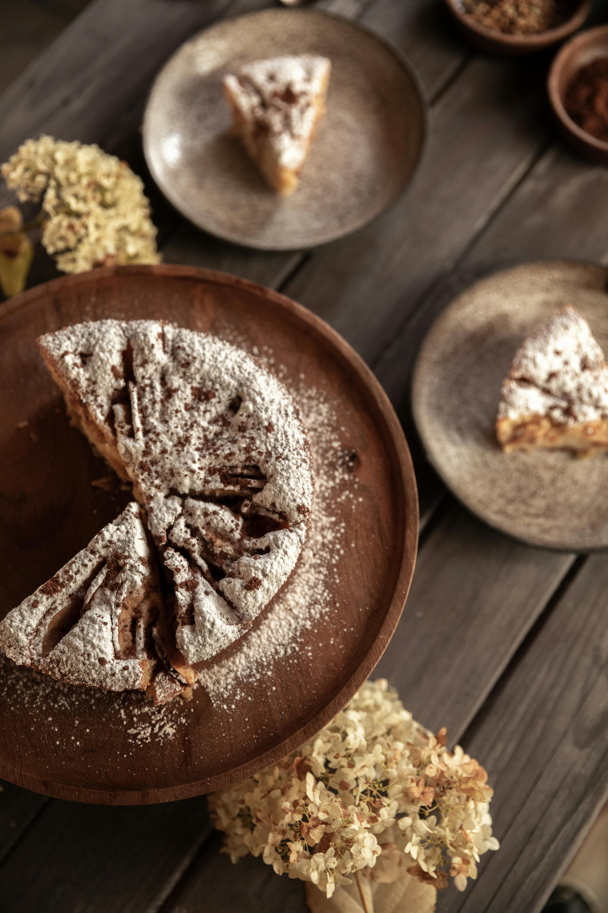

Apple Cake

Although I got the recipe for this cake from my mother, it primarily reminds me of my beloved grandmother and the rays of the summer afternoon sun.
I remember eating it for dessert as a child, spending holidays with my grandmother at our seaside cottage.
And although my grandmother baked it in a prodiz (because we had nothing else in the field), you can easily use the oven :)
Enjoy!
Ingredients
- 5 eggs
- 1 cup of sugar
- 1 cup of flour
- 200g of butter
- 1,5 ts of baking powder
- vanilia bean
- 2 or 3 apples
Steps
- Heat your oven to 180 C°(350F)
- Mix egg yolks with the sugar until they became white and fluffy
- Mix in the butter, adding it gradually, piece by piece
- Add flour, seeds from the vanilia bean and baking powder
- Add whipped egg white, mix it very carefuly
- Transfer mixture to the baking form filed with baking paper,
optionaly you can coat the form with butter and sugar
- Add peeled and sliced apples into the mixture
- Bake for 50 minutes or till the dry stick
- After cooling, sprinkle with powdered sugar on top
Home